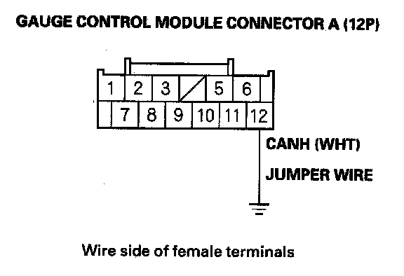
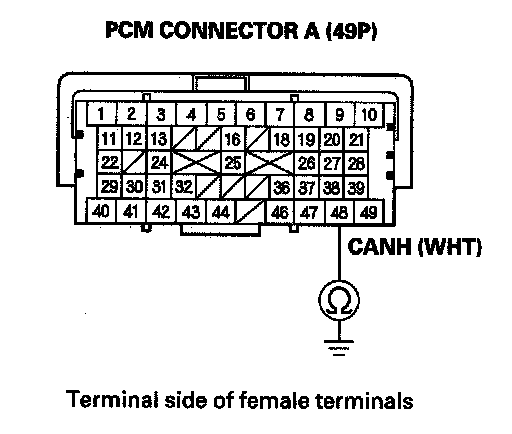
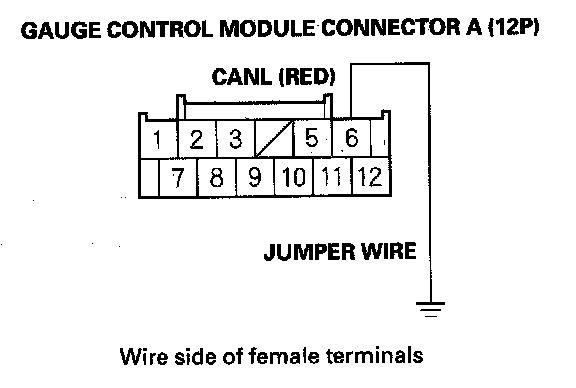
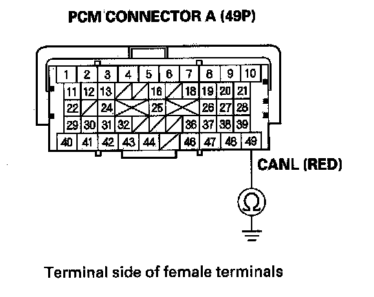

Fuel and Emissions
DTC U0155: F-CAN Malfunction (PCM-Gauge Control Module)NOTE: Before you troubleshoot, record all freeze data and any on-board snapshot, and review the general troubleshooting information.
1. Turn the ignition switch ON (II).
2. Clear the DTC with the HDS.
3. Check for Temporary DTCs or DTCs with the HDS.
Is DTC U0155 indicated?
YES - Go to step 4.
NO - Intermittent failure, the system is OK at this time. Check for poor connections or loose terminals at the gauge control module and the PCM.
4. Check for body electrical DTCs in the DTCs MENU with the HDS.
Is DTC B1168, B1169, and/or B1178 indicated?
YES - Go to step 5.
NO - Do the gauge control module input test.
5. Turn the ignition switch OFF.
6. Jump the SCS line with the HDS.
7. Remove the gauge control module.
8. Disconnect gauge control module connector A (12P).
9. Disconnect PCM connector A (49P).

10. Connect gauge control module connector terminal A12 to body ground with a jumper wire.

11. Check for continuity between PCM connector terminal A48 and body ground.
Is there continuity?
YES - Go to step 12.
NO - Repair open in the wire between the PCM (A48) and the gauge control module, then go to step 14.

12. Connect gauge control module connector terminal A6 to body ground with a jumper wire.

13. Check for continuity between PCM connector terminal A49 and body ground.
Is there continuity?
YES - Substitute a known-good gauge control module, then go to step 14 and recheck. If DTC U0155 is not indicated, replace the original gauge control module, then go to step 14.
NO - Repair open in the wire between the PCM (A49) and the gauge control module, then go to step 14.
14. Reconnect all connectors.
15. Turn the ignition switch ON (II).
16. Reset the PCM with the HDS.
17. Do the PCM idle learn procedure.
18. Check for Temporary DTCs or DTCs with the HDS.
Is DTC U0155 indicated?
YES - Check for poor connections or loose terminals at the gauge control module and the PCM, then go to step 1.
NO - Troubleshooting is complete. If any other Temporary DTCs or DTCs are indicated, go to the indicated DTCs troubleshooting.